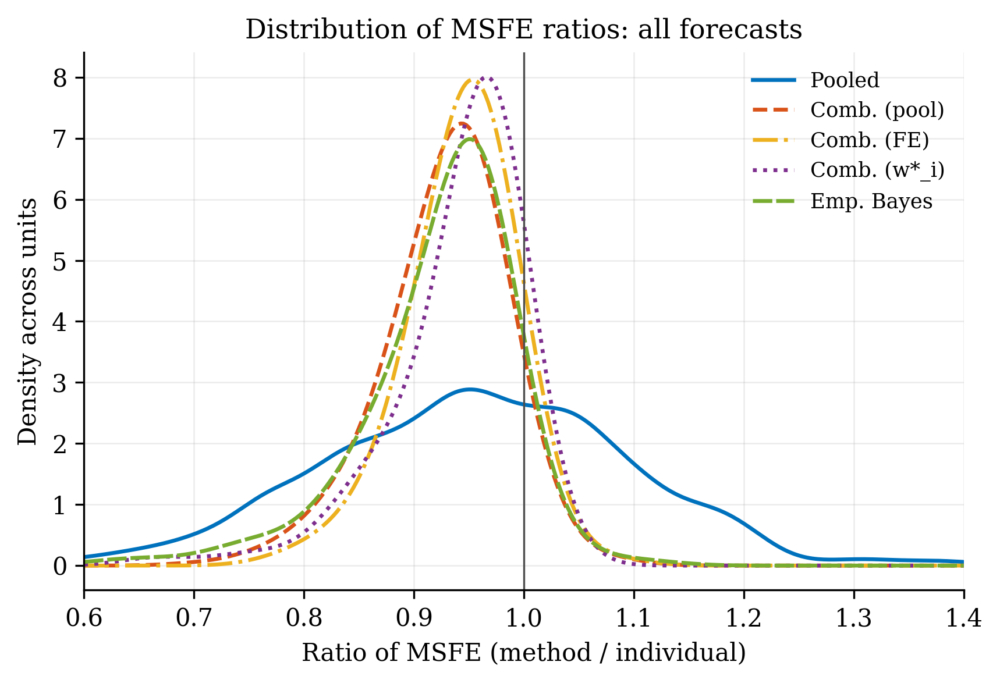
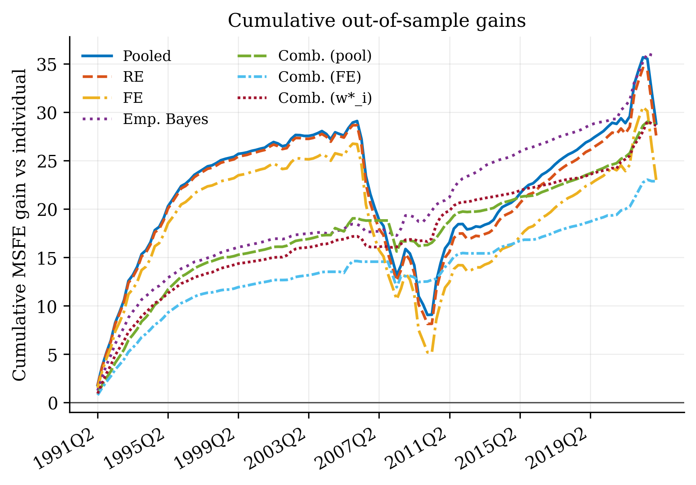
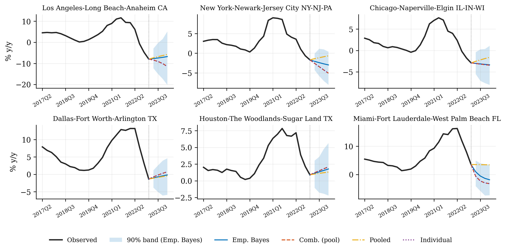
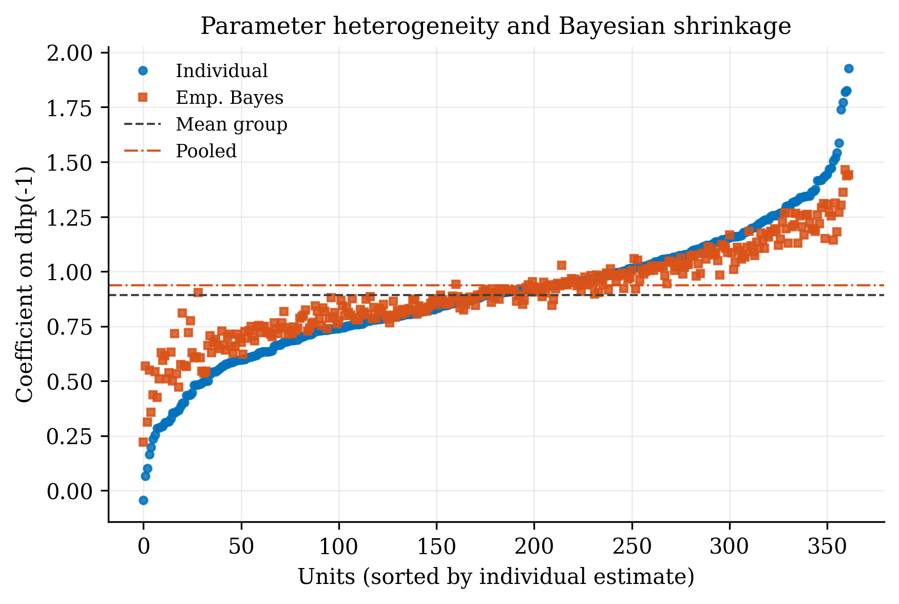
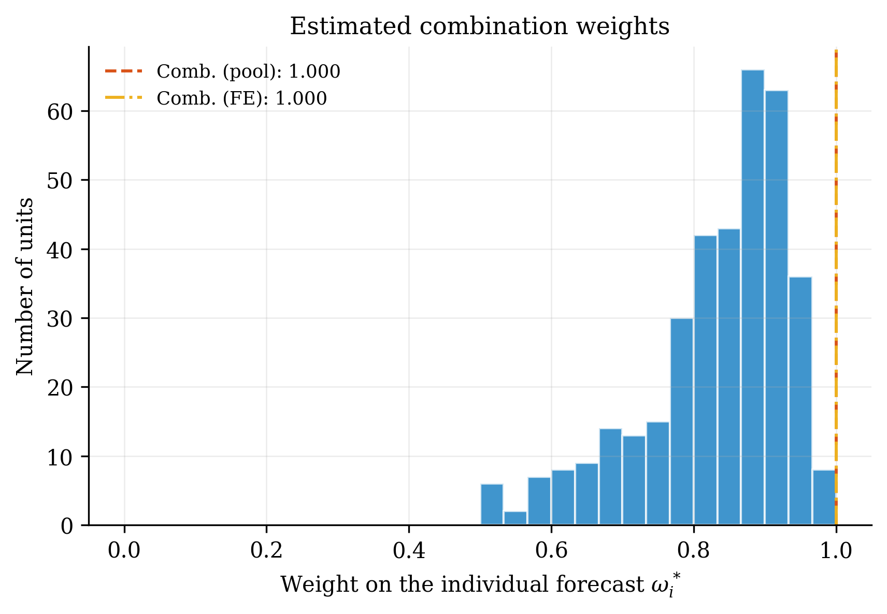
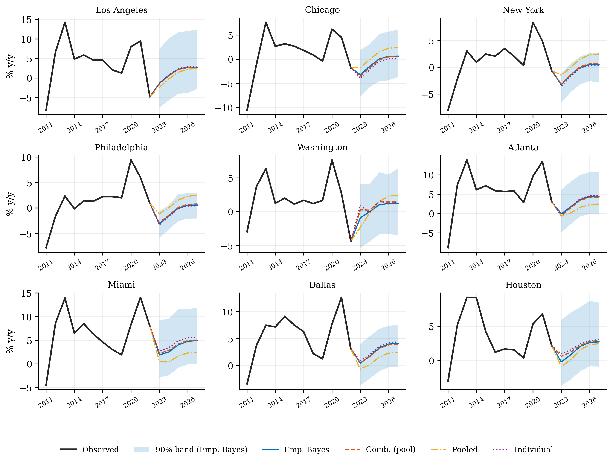

Pool, don’t pool, or combine?
With many units observed for a short time, unit-by-unit forecasts are noisy and pooled forecasts are biased when units differ. The paper quantifies this trade-off and proposes combinations and empirical Bayes forecasts that adapt to it. The package gives you every method in one call.
Ten forecasting methods
Individual, pooled, FE, RE-BLUP, empirical Bayes, three optimal combinations and two equal-weight combinations; plus Stein, Mallows, iterative and hierarchical Bayes, mean group and RE-AR(1) as extensions.
Evaluation & tests
Rolling or expanding windows, Table 2 (relative MSFE, beating, best and worst shares, κ conditioning), panel and unit Diebold–Mariano tests (Table 3).
Small panels
Lags built automatically, contemporaneous scenario variables, iterated multi-step forecasts, offsets and bootstrap predictive intervals.
Real data & figures
House prices of 377 US metros and 187 CPI sub-indices; journal-style tables (text, LaTeX) and figures with the MATLAB Parula map.
Install
pip install forecastpanel
pip install "forecastpanel[excel]" # read .xlsx files
pip install "forecastpanel[fast]" # parallel Monte Carlo (joblib)Requires Python ≥ 3.10 with numpy, scipy, pandas and matplotlib. New to Python? The README guide starts from installing Anaconda.
The model and the forecasts
Panel regression with heterogeneous coefficients (eq. 1): $$y_{it}=\boldsymbol\theta_i'\mathbf w_{it}+\varepsilon_{it},\qquad \mathbf w_{it}=(1,\mathbf x_{it}')',\qquad \boldsymbol\theta_i=\boldsymbol\theta+\boldsymbol\eta_i ,$$ where \(\mathbf x_{it}\) is known at \(t-h\) and may contain lagged \(y\) (weakly exogenous regressors).
Individual and pooled forecasts, \(\hat y_{i,T+1}=\hat{\boldsymbol\theta}_i'\mathbf w_{i,T+1}\) and \(\tilde y_{i,T+1}=\tilde{\boldsymbol\theta}'\mathbf w_{i,T+1}\), have average MSFEs (Propositions 1–2) $$\frac1N\sum_i\hat e_{i,T+1}^2=\bar\sigma^2+T^{-1}h_{NT}+O_p(N^{-1/2}),\qquad \frac1N\sum_i\tilde e_{i,T+1}^2=\bar\sigma^2+\Delta_{NT}+O_p(N^{-1/2}).$$ \(h_{NT}\) is the cost of estimation error and \(\Delta_{NT}\) the cost of neglected heterogeneity.
The combination \(y^*_{i,T+1}=\omega\hat y_{i,T+1}+(1-\omega)\tilde y_{i,T+1}\) has optimal common weight (eq. 32) $$\omega^*_{NT}=\frac{\Delta_{NT}-T^{-1}\psi_{NT}}{\Delta_{NT}+T^{-1}h_{NT}-2T^{-1}\psi_{NT}},$$ estimated with $$\hat\Delta_{NT}=\tfrac1N\sum_i(\mathbf w_{i,T+1}'\tilde{\boldsymbol\eta}_i)^2,\quad \hat h_{NT}=\tfrac1N\sum_i\hat\sigma_i^2\,\mathbf w_{i,T+1}'\mathbf Q_{iT}^{-1}\mathbf w_{i,T+1},$$ and \(\hat\psi_{NT}\) from the half-panel jackknife bias \(\tfrac12(\hat{\boldsymbol\theta}_{ia}+\hat{\boldsymbol\theta}_{ib})-\hat{\boldsymbol\theta}_i\) (eqs. 40, 41, 43).
Unit-specific weights (eq. 36): \(\omega_i^*=\dfrac{\mathbf w'\boldsymbol\Omega_\eta\mathbf w}{\mathbf w'(T^{-1}\sigma_i^2\mathbf Q_{iT}^{-1}+\boldsymbol\Omega_\eta)\mathbf w}\). Empirical Bayes (eq. 44, Hsiao, Pesaran and Tahmiscioglu, 1999): $$\hat{\boldsymbol\theta}_{i,EB}=\big(\hat\sigma_i^{-2}\mathbf W_i'\mathbf W_i+\hat{\boldsymbol\Omega}_\eta^{-1}\big)^{-1}\big(\hat\sigma_i^{-2}\mathbf W_i'\mathbf y_i+\hat{\boldsymbol\Omega}_\eta^{-1}\bar{\hat{\boldsymbol\theta}}\big).$$
Step → equation map
| Code | Paper | What it computes |
|---|---|---|
individual_ols | (11), (S.11) | unit OLS, σ̂²ᵢ with T − K |
pooled_ols | (12) | pooled OLS |
fixed_effects | (25) | within slopes and unit intercepts |
random_effects_blup | (S.16) | RE-GLS + Goldberger (1962) BLUP correction |
empirical_bayes | (44)–(45) | EB coefficients and shrinkage matrices |
half_jackknife | Sec. 4.3 | half-panel jackknife (odd T drops the middle observation) |
weight_individual_pooled | (32), (40), (41), (43) | ω̂ with Δ̂, ĥ, ψ̂ |
weight_individual_fe | (39), (79)–(81) | individual/FE weight (code or paper variant) |
weights_unit_specific | (36), (46) | ω*ᵢ with σ̂²ᵢ of PPT (2022) |
hierarchical_bayes | (S.17) | Gibbs sampler, 1500 draws, 500 burn-in |
panel_dm_test, dm_test | Table 3 | PPP (2013) panel DM; DM (1995) and HLN (1997) |
simulate_panel, monte_carlo | (47)–(51), Table 1 | Monte Carlo design |
panel_pr2 | Table S.1 | pooled R² of the design |
Full map and derivations: docs/methods.md.
Syntax reference
model = fp.PanelForecaster(data, unit, time, y, y_lags=[1], x=None, exog=None,
trend=False, methods=None, fe_weight="code",
unit_sigma="ppt2022", omega_regularize=None)
res = model.fit(window=None, end=None, future=None) # ForecastResults
res.forecast(horizon=1, future=None, fill=None, offsets=None)
res.intervals(horizon=1, future=None, n_boot=499, level=0.90, seed=None, design="fixed")
res.summary(); res.coefficients(); res.unit_weights(); res.eb_shrinkage()
ev = model.evaluate(window=60, scheme="rolling", n_forecasts=None, horizon=1)
ev.summary(); ev.msfe_table(); ev.dm_tests(variance="independent"); ev.to_latex("msfe")
ev.plot_density(); ev.plot_heatmap(); ev.plot_cumulative()| Argument | Default | Meaning |
|---|---|---|
y_lags | [1] | lags of y in wit |
x | None | predictors: list (lag 1) or {name: lags}; lag 0 = contemporaneous |
exog | None | contemporaneous scenario variables |
methods | paper 8 + 2 | keys: individual, pooled, re, fe, eb, comb_pool, comb_fe, comb_unit, eq_pool, eq_fe, comb_unit_ba, mean_group, ib, stein, mallows, re_ar1, hb |
fe_weight | "code" | individual/FE weight: replication code or eqs. (79)–(81) |
unit_sigma | "ppt2022" | σ²ᵢ in eq. (46) |
omega_regularize | None | "ridge"/"diagonal" Ω̂η for small N |
kappa_legacy (evaluate) | False | reproduce the published κ columns (see below) |
US house prices: replicating Tables 2 and 3
Real house-price inflation in 362 metropolitan areas, 1976Q1–2023Q1 (Freddie Mac index deflated by CPI-U). Model (52): own lag, spatial lag, regional and national averages; rolling windows of 60 quarters, 128 forecasts.
import forecastpanel as fp
df = fp.load_house_prices(with_neighbors_only=True)
model = fp.PanelForecaster(df, unit="msa", time="quarter", y="dhp", y_lags=[1],
x={"dhp_spatial": 1, "dhp_region": 1, "dhp_us": 1}, methods="paper")
ev = model.evaluate(window=60, n_forecasts=128)
print(ev.summary())| MSFE ratio (all) | κ=0 | κ=±1 | Beat bench. (all) | Largest MSFE (all) | Panel DM | DM<−1.96 / >1.96 | |
|---|---|---|---|---|---|---|---|
| Individual | 2.822 | 2.258 | 2.908 | – | 0.569 | – | – |
| Pooled | 0.920 | 0.769 | 0.983 | 0.613 | 0.157 | −9.45 | 60/6 |
| RE | 0.924 | 0.773 | 0.991 | 0.619 | 0.003 | −9.11 | 62/6 |
| FE | 0.936 | 0.791 | 1.012 | 0.591 | 0.251 | −7.57 | 57/8 |
| Emp. Bayes | 0.901 | 0.821 | 0.908 | 0.942 | 0.003 | −24.63 | 209/2 |
| Comb. (pool) | 0.920 | 0.860 | 0.917 | 0.939 | 0.000 | −22.93 | 189/0 |
| Comb. (FE) | 0.937 | 0.892 | 0.931 | 0.917 | 0.011 | −21.19 | 169/0 |
| Comb. (ω*ᵢ) | 0.921 | 0.836 | 0.942 | 0.936 | 0.006 | −27.59 | 240/0 |
kappa_legacy=True reproduces the published κ columns exactly.




Annual data, scenarios and intervals
A typical firm, sector or country panel has a few units, about a dozen years, and needs forecasts five years ahead under scenarios. The example uses nine large metros, annual 2011–2022 (T = 12), with national inflation as a contemporaneous driver.
model = fp.PanelForecaster(d, unit="metro", time="year", y="dhp", y_lags=[1], exog=["dhp_us"],
methods=["individual", "pooled", "fe", "eb", "comb_pool", "comb_unit", "mallows", "stein"])
res = model.fit()
baseline = pd.DataFrame({"year": [2023, 2024, 2025, 2026, 2027], "dhp_us": [-2, 0, 1.5, 2, 2]})
fc = res.forecast(horizon=5, future=baseline) # iterated scenario forecasts
iv = res.intervals(horizon=5, future=baseline, n_boot=499, seed=2026)
ev = model.evaluate(window=7, scheme="expanding")
fp.wide_to_long(df, time="year", units=[...], common=[...]). A scenario variable that is zero throughout the sample has no estimable effect; add it with forecast(..., offsets={unit: [...]}) and report it as an assumption.Interpreting tables and figures
Weights
weight is the share of the individual forecast. Δ̂ (heterogeneity) pushes it up, ĥ (estimation error, large for small T or unusual regressors) pushes it down, and ψ̂ corrects for correlated heterogeneity with lagged dependent variables.
Table 2
Values below 1 in the MSFE-ratio block favour the method. A low “largest MSFE” share means the method rarely fails badly: the insurance property of EB and the combinations.
Table 3
Negative panel DM statistics mean the method beats the individual forecasts on average. The counts give units with significantly better / worse forecasts at 5%.
Figure 1
Mass left of 1 is good. Wide, right-skewed densities (pooled, FE, RE) signal high risk for units far from the average; EB and combinations are concentrated just below 1.
Checked against the authors’ code, and what differs
- All eleven forecasts agree with the MATLAB replication functions to 1e-10 on three simulated panels.
- Table 2 and Table 3 (house prices) are reproduced number for number; Table 1 within Monte Carlo error; Table S.1 exactly.
ppt_house.m the forecast-period value is stored as a full column and read by linear index, so every MSA is compared with MSA no. 1’s value. With each MSA’s own value the pooled κᵢ = 0 ratio is 0.769, not 1.162. Default: corrected; kappa_legacy=True: published numbers.variance="ppp-legacy": the code; "cross-section-average": footnote 17.ppt_cpi.m computes the principal component from the first 72 months only, so the same factor values enter every rolling window.Extensions (additions to the original method)
| Addition | What it adds | Reference |
|---|---|---|
| Stein-rule shrinkage | pooled weight c/F from the Chow statistic | Maddala et al. (1997) |
| Iterative Bayes | EB iterated to convergence | Maddala et al. (1997) |
| Mallows pooling averaging | closed-form two-model Mallows weight | Wang, Zhang and Paap (2019) |
| RE-AR(1) BLUP | random effects with serially correlated errors | Baltagi and Li (1992); Baltagi (2008) |
| Mean group | average of unit estimates with Pesaran–Smith SEs | Pesaran and Smith (1995) |
| Regularised Ω̂η | EB when N is close to K | paper footnote 12 |
| Multi-step & scenarios | iterated forecasts, scenario paths, offsets | — |
| Bootstrap intervals | predictive bands with estimation and innovation uncertainty | — |
References
- Pesaran, Pick and Timmermann (2026). Forecasting with panel data: Estimation uncertainty versus parameter heterogeneity. Quantitative Economics 17(2), 342–393. doi:10.3982/QE2589
- Pesaran, Pick and Pranovich (2013). Optimal forecasts in the presence of structural breaks. J. Econometrics 177, 134–152. doi
- Hsiao, Pesaran and Tahmiscioglu (1999). Bayes estimation of short-run coefficients in dynamic panel data models. Cambridge UP. doi
- Goldberger (1962). Best linear unbiased prediction in the generalized linear regression model. JASA 57. doi
- Baltagi (2008). Forecasting with panel data. J. Forecasting 27. doi
- Baltagi and Li (1992). Prediction in the one-way error component model with serial correlation. J. Forecasting 11. doi
- Maddala, Trost, Li and Joutz (1997). Estimation of short-run and long-run elasticities of energy demand from panel data using shrinkage estimators. JBES 15. doi
- Wang, Zhang and Paap (2019). To pool or not to pool. J. Applied Econometrics 34. doi
- Trapani and Urga (2009). Optimal forecasting with heterogeneous panels: A Monte Carlo study. IJF 25. doi
- Chudik, Pesaran and Yang (2018). Half-panel jackknife fixed-effects estimation. J. Applied Econometrics 33. doi
- Dhaene and Jochmans (2015). Split-panel jackknife estimation of fixed-effect models. REStud 82. doi
- Pesaran and Smith (1995). Estimating long-run relationships from dynamic heterogeneous panels. J. Econometrics 68. doi
- Diebold and Mariano (1995). Comparing predictive accuracy. JBES 13. doi
- Harvey, Leybourne and Newbold (1997). Testing the equality of prediction mean squared errors. IJF 13. doi
- Lindley and Smith (1972). Bayes estimates for the linear model. JRSS B 34. doi
- Timmermann (2006). Forecast combinations. Handbook of Economic Forecasting 1. doi
- Yang (2021). Common factors and spatial dependence: an application to US house prices. Econometric Reviews 40. doi
- Welch and Goyal (2008). A comprehensive look at the empirical performance of equity premium prediction. RFS 21. doi